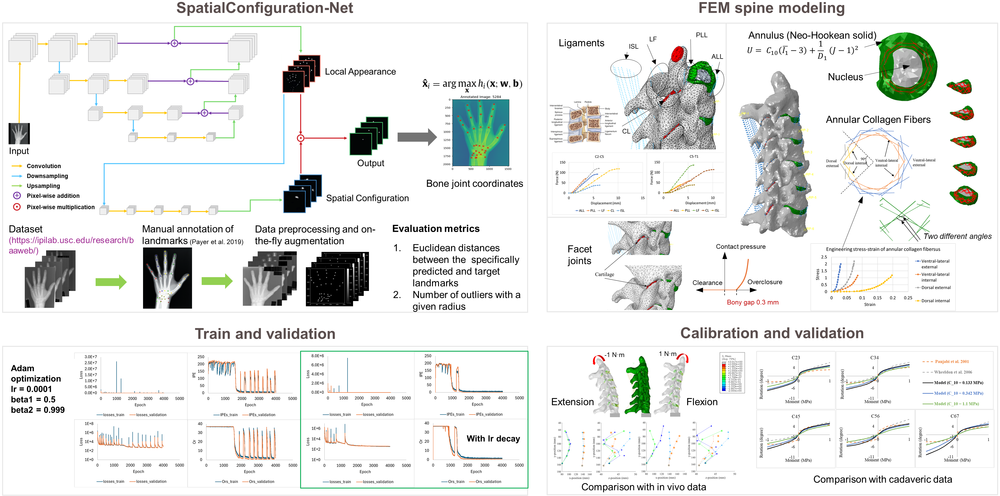
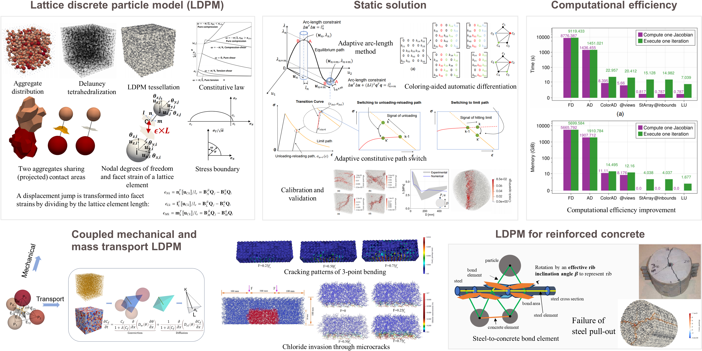
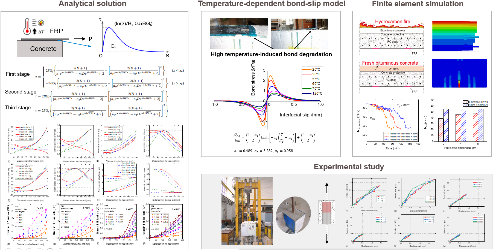

September 2022 – Present, at University of Pittsburgh
Medical Image Analysis and Spinal Disc Degeneration Estimation
1. Labeling medical images (self interest)
Reliable and accurate labeling and segmentation of medical images is expected to benefit clinical decision support systems for diagnosis, surgery planning, and population-based analysis of pathology. However, the high costs of image acquisition and the extensive manual annotation effort limit the availability of training data for many medical image analysis applications. To mitigate this challenge, this work implements the SpatialConfiguration-Net (SCN) inspired by existing literature, for anatomical landmark localization. The SCN architecture addresses the localization task by dividing it into two sub-problems, thereby reducing the need for large training datasets. This simplification is achieved through the multiplication of heatmap predictions from its two components, allowing for end-to-end training. Empirical evaluations on open-source hand radiographs demonstrate that the SCN maintains high performance even with a limited number of training images.
2. In vivo subject-specific estimation of cervical intervertebral disc degeneration
Progressive deterioration of cervical intervertebral discs narrows the spinal canal, leading to chronic spinal cord compression and disability. This study proposes a computational method to estimate the in vivo material degradation of cervical intervertebral discs. The kinematics of the cervical spinal column is modeled using a nonlinear finite element method, incorporating the latest nonlinear material properties from experiments. In vivo intervertebral motion data, acquired from biplane radiography for a given subject, were used to inversely calibrate the disc material properties and validate the spine mechanical model. The calibrated disc properties successfully revealed a reduction in the stiffness of the annulus and nucleus in the patient's cervical spine.

Ouhsousou, S., Jia, D. G., LeVasseur, C. M., Shaw, J., Anderst, W. & Brigham, J. C. (2024, June). In vivo subject-specific estimation of cervical spine discs material properties. In CMBE 2024-8th International Conference on Computational and Mathematical Biomedical Engineering.
Efficient solution and Extension of lattice discrete particle model
1. An efficient static solver for the lattice discrete particle model
The lattice discrete particle model (LDPM) has been proven to be one of the most appealing computational tools to simulate fracture in quasi-brittle materials. Despite tremendous advancements in the definition and implementation of the method, solution strategies are still limited to dynamic algorithms, resulting in prohibitive computational costs and challenges related to solution accuracy for quasi-static conditions. This study presents a novel static solver for LDPM, introducing several fundamental innovations to overcome convergence issues. Additionally, graph coloring of the Jacobian operator, automatic differentiation, and advanced matrix manipulations are utilized to improve computational efficiency by up to 1000 times.
2. Lattice discrete particle modeling to coupled mechanical and mass transport simulation of reinforced concrete
Although the Lattice Discrete Particle Model (LDPM) has excelled in simulating cracking patterns of particle-reinforced materials, its potential for modeling mass transport through cracks and steel-reinforced materials remains underexplored. This study introduces three new elements to the LDPM: mass transport elements through crack channels, steel elements, and steel-to-concrete bond elements. These enhancements enable the model to simulate chloride transport in damaged reinforced concrete. Notably, the bond element efficiently represents the effects of rebar ribs. The integrated model uses a fully dynamic solution strategy: reinforced concrete is solved with a dynamic explicit method and central difference scheme, while mass transport models use a dynamic implicit method with the Crank-Nicolson scheme and Newton-Raphson iterations. Calibration and validation have been conducted with rational accuracy, though the work is ongoing.

Jia, D., Brigham, J. C., & Fascetti, A. (2024). An efficient static solver for the lattice discrete particle model. Computer-Aided Civil and Infrastructure Engineering, accepted.
Jia, D., Zhu, Y., Brigham, J. C., & Fascetti, A. (2024). A novel dual lattice discrete particle model for multiphysics simulation of coupled mechanical and transport behavior in concrete members subjected to long-term loading. In 16th World Congress on Computational Mechanics and 4th Pan American Congress on Computational Mechanics (WCCM-PANACM).
September 2019 – March 2022, at Shanghai Jiao Tong University
Mechanics of FRP-to-Concrete Bonded Joints Under Combined Loading and Temperature Variation
1. Analytical solution for the full-range behavior of FRP-to-concrete bonded joints under combined loading and temperature variations
Concrete structures strengthened with externally bonded fiber-reinforced polymer (FRP) composites experience significant temperature variations, inducing interfacial thermal stress due to thermal incompatibility. This analytical study predicts the full-range deformation behavior of a mechanically loaded FRP-to-concrete bonded joint with arbitrary bond lengths under temperature variations. The closed-form solution isolates interfacial thermal stress effects from temperature-induced material property changes, accurately calibrating bond-slip characteristics and interfacial fracture energy.
2. High temperature-induced deterioration of FRP-to-concrete bonded joints and the resulting reduction in the load-bearing capacity of FRP-strengthened bridge decks
Based on the theoretical analytical solution and existing high-temperature FRP-concrete interface shear test data, a precise constitutive model for the bond-slip behavior at high temperatures was developed. This model accurately captures the reduction in local bond strength, increased peeling deformation, and slower softening of bond stress due to high temperatures. A finite element model was then used to analyze the effects of high-temperature conditions, such as car fires and hot asphalt laying, on the load-bearing capacity of FRP-strengthened concrete bridge decks. Results indicate that these conditions degrade the flexural capacity, but increasing the concrete protective layer thickness and using adhesives with a higher glass transition temperature can mitigate the negative effects.

Jia, D., Gao, W., Duan, D., Yang, J., & Dai, J. (2021). Full-range behavior of FRP-to-concrete bonded joints subjected to combined effects of loading and temperature variation. Engineering Fracture Mechanics, 254, 107928.
September 2017 – June 2018, at Huazhong University of Science and Technology
Elastic visco-plastic nonlinear consolidation model of soft clay under cyclic loading
massive headline
1. Modeling elastic visco-plastic nonlinear consolidation of soft clay under cyclic loading
Long-term consolidation and settlement analysis of soft clay under cyclic loading is critical for settlement prediction of infrastructures such as highways and railways. Currently available constitutive models of soft clay does not take into account of both creep settlement and the dynamic effect of train loading. This study establishes an elastic visco-plastic nonlinear consolidation model for cyclic loading conditions with nonlinear behavior of permeability coefficient kv and volume compressibility coefficient mv. A series of one-dimensional cyclic loading tests are conducted in this study and used to calibrate and validate the proposed model. Comparisons reveal that the proposed method can reflect the inhomogeneity of the strain and the excess pore pressure in the depth.
2. Developemnt of long-term settlement calculation software for soft clay foundation considering different creep effects.
To facilitate the application of research findings to the operation and maintenance of the Hangzhou Metro, MATLAB-based software, Calcusettlement, designed for calculating the settlement of multi-layered mixed soft clay foundations was developed. This software employs consolidation models from Zhu and Yin (2005) and the U.S. Navy (1985), respectively. Additionally, the software integrates a module for creep effects and allows customization of dynamic loading conditions. This software enables the prediction of settlement for multi-layered mixed soft clay foundations under various conditions using different models.
 Xu, D., & Jia, D. (2019). MATLAB-based software: Long-term settlement calculation software for soft clay foundation considering different creep effects. China Copyright Administration, No. 04768603. (Software copyright)
Xu, D., & Jia, D. (2019). MATLAB-based software: Long-term settlement calculation software for soft clay foundation considering different creep effects. China Copyright Administration, No. 04768603. (Software copyright)
Xu, D., Jia, D., & Zheng, Y. (2018). One dimensional elastic visco-plastic nonlinear consolidation model of soft clay under cyclic loading. Chinese unpublished paper.
{kind=link}